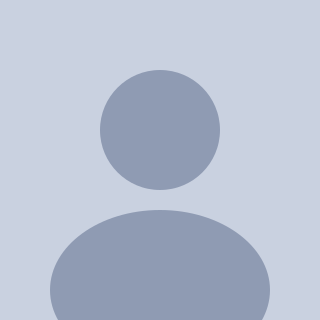

~/about
About
Computer Science student in Annecy. I build applications; outside of code: mountains, sewing and video games.
At a glance

- Name
- Zacharie CHAILLOU
- Studies
- BUT in Computer Science, 2nd year
IUT d’Annecy, Université Savoie Mont Blanc - Track
- A: application development
design, development, validation - Before
- French baccalauréat, with honours (2025)
Lycée Berthollet, Annecy - Based in
- Annecy, France
- Languages
- French native
English C1, advanced
Spanish B1, intermediate - Status
- Looking for a 10 to 12-week internship starting
Who am I?
I’m in my second year of a BUT in Computer Science at IUT d’Annecy, on the application development track. Before that, I earned my French baccalauréat with honours at Lycée Berthollet, majoring in maths, physics-chemistry and computer science, in the EMILE bilingual option (classes taught in English).
What I love about development is turning an idea into something people can actually use: a game in C#/WPF, a management app for a bakery, an e-commerce site with its whole information system. I care as much about the interface as about what runs behind it.
Alongside my studies, I work as a waiter and head waiter in Annecy. That’s where I learned to keep calm during the rush, to work as part of a team and to talk with everyone.
Interests
- MountainsCompetitive trail running, hiking and bivouacs in the Alps, skiing and snowboarding in winter.
- FashionSewing clothes, analysing runway shows, keeping up with trends.
- Video gamesIndie and adventure games. A good game can change a life.
Find me
- GitHubgithub.com/ZachChll
- LinkedInZacharie Chaillou
- E-mailzachaillou@gmail.com